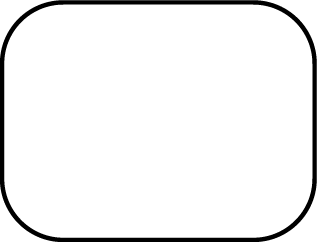

pure useless white, do not ever add white into watercolor because it will ruin the transparency of the painting.
However, this is also where everything begins*
summer of 2019 is the most precious memory I'll never forget. That summer I graduated from
high school and is probably the only summer where we can enjoy and do not have to worry about anything in life.
Afterall we all have to leave to go on a journey.
summer
This was taken at sunrise in front of my school where I had classes 7 in the morning.
Bittersweet time.
sunrise
orange juice is just as nice as lemon juice
orange
Sometimes when I got out of school late in the evening,
I can catch a picture of the sunset.